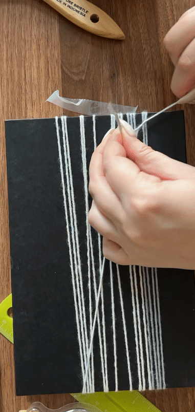
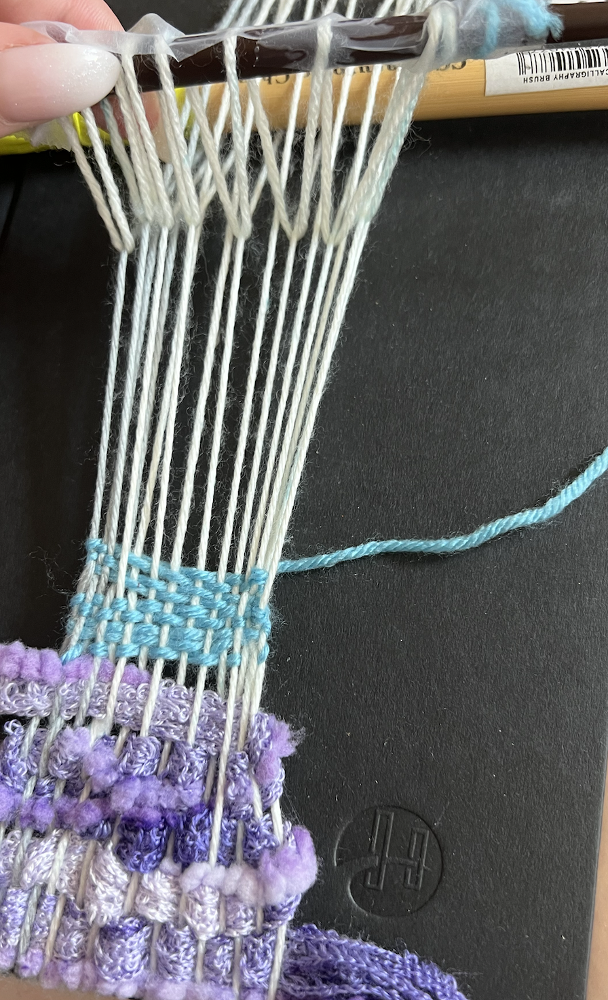

I was a bit worried about the beginning of this project because I had to miss class on 8/31 due to a medical appointment (#bonegraft).
For this experiment, I have collected some different types of book weaver's (bookmark, chopstick. I also chose my book, and it is the most recent book I've read, called "The Subtle Art of Not Giving a F**k" by Mark Manson. I traveled to Art Parts in Boulder, Colorado to aquire some donated yarn. I gathered a multi-colored blue cotton yarn, a shiny crimped white yarn, and finally a multi-thread purple yarn cluster.
Its critical to make observations and take time while you are exploring materials and techniques. We want to submit a collection (at least three, but more are welcome) of your notes on process. Each note should include a photo and an observation or idea that emerged. I spent a while trying to figure out the right technique, especially since I have quite long nails. I eventually ended up using an extra thick needle and tweezers to help me pick up each individual warp. After setting everything up, I started wefting with this beautiful purple yarn. After an inch or so, I went back and added some multi-colored blye yarn to tie everything together.
I was also trying a few new types of documentation during this project, including the use of a tri-pod, artifical lighting and using time-lapse/gif content.
I enjoyed this project from the get-go, especially sourcing the materials. Going to Art Parts was a super fun experience, and I embodied the purpose of the book by choosing materials that made me the most excited to work with, regardless of their texture, color or shape. I struggled in the beginning because I wasn't using the right materials to move the loom, which made it difficult to pick up the correct set of warps. Not all of my wefts were completely perfect, but I think that it still looked quite nice, espeically the purple bundled yarn strands. With the purpose of the book on my mindset, I focused on embracing the process instead of focusing on the imperfections. If I had more time on this assignment, I would want to try more weaving patterns, but I was more focused on the structure of the loom and how the mechanics worked. I will be excited to see a pre-made looms, that are made specifically for weaving and not reading :-)
Thank you for reading my response! If you wish to see my other projects for Experimental Textiles, click here!P.S. I will update the css as soon as possible I apologize for the poor formatting